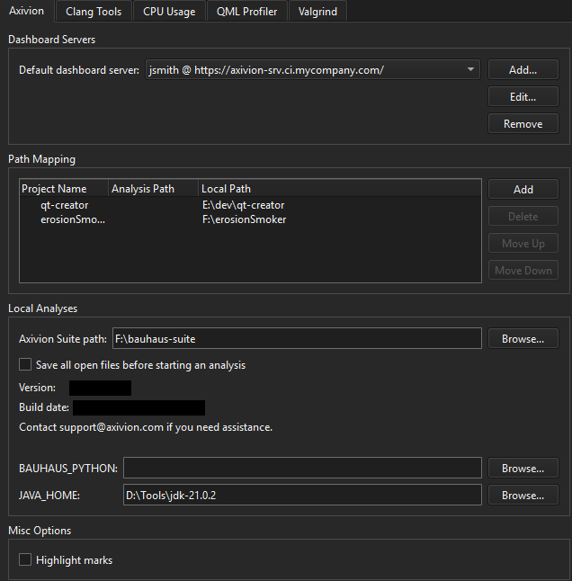
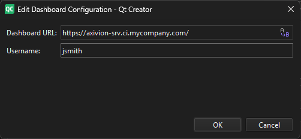

Axivion
You can connect to an Axivion dashboard server and map dashboard projects to local projects.
Note: Enable the Axivion plugin to use it.
Connecting to a Dashboard Server
To connect to an Axivion dashboard server:
- Go to Preferences > Analyzer > Axivion.

- Select Add to add a new connection to an Axivion dashboard server or Edit to change an existing connection:

- In Dashboard URL, enter the URL of the server.
- In Username, enter the username to access the server.
Select Remove to remove the current selected connection to an Axivion dashboard server.
The first time you access the server, you must enter the password that matches the username. It is stored safely in your keychain that is provided by the OS for later use.
Select Highlight marks to highlight found issues on the scrollbar in the editor.
Mapping Paths
Projects on the dashboard might have subprojects that also appear on the dashboard because they are analyzed separately.
To map dashboard projects to local projects:
- In Path Mapping, select Add.
- In Project name, enter the project name on the dashboard.
- In Analysis path, enter the path to the analysis of a subproject. You need this only to map analyses of subprojects.
- In Local path, enter the path to the project on the computer.
Local Analyses
To perform local analyses, specify additional settings.
In Axivion Suite path, enter the path to the locally installed Axivion Suite.
In BAUHAUS_PYTHON, enter the path to the python executable to be used by the local analysis if it cannot be found automatically.
In JAVA_HOME, enter the path to a Java runtime or Java development kit if it cannot be found automatically.
Select Save all open files before starting an analysis to automatically save files opened inside the editor before starting an analysis.
See also Enable and disable plugins, View Axivion static code analysis results, and Local Analysis.